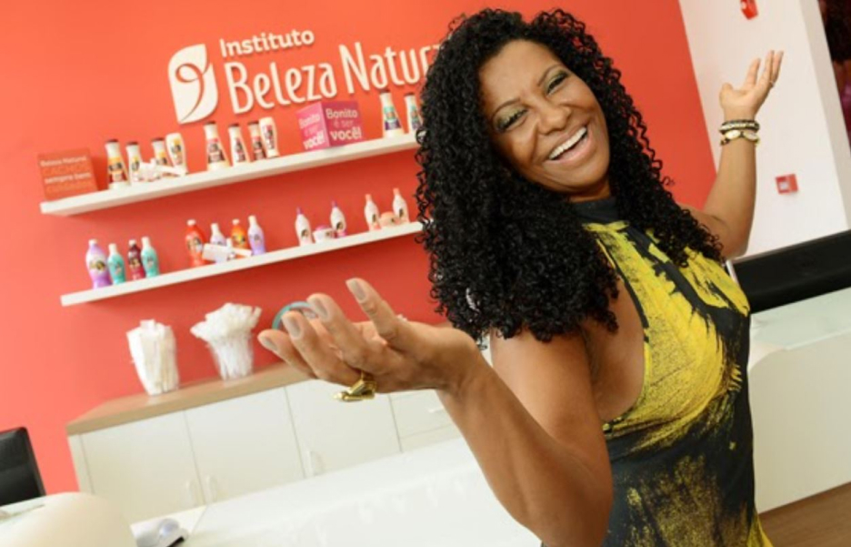
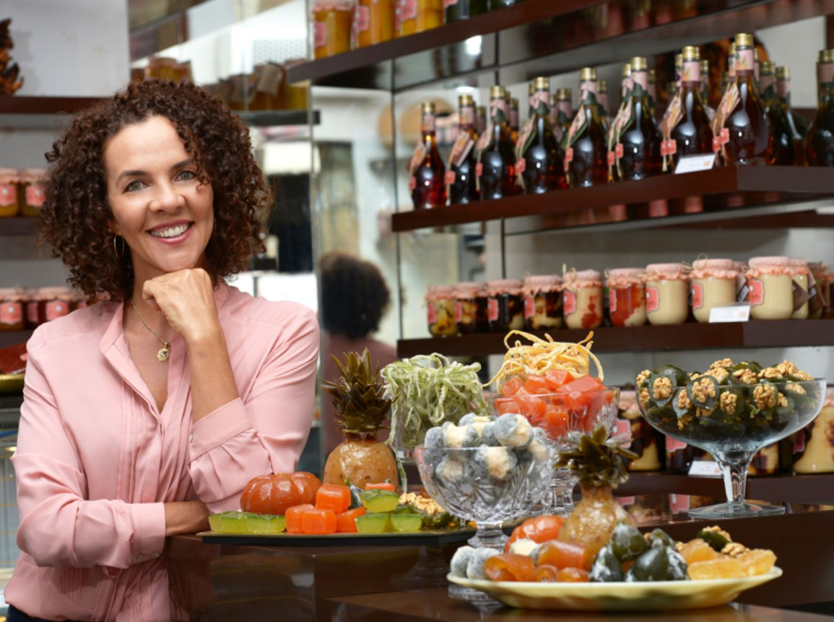
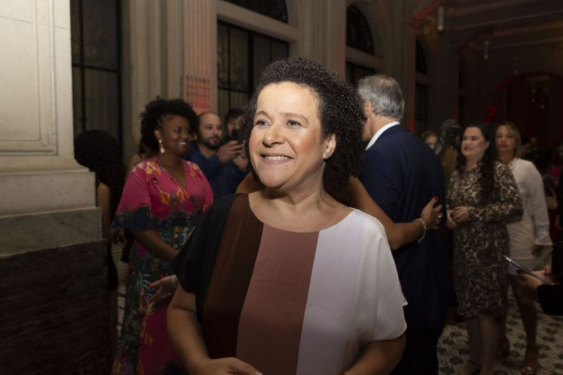
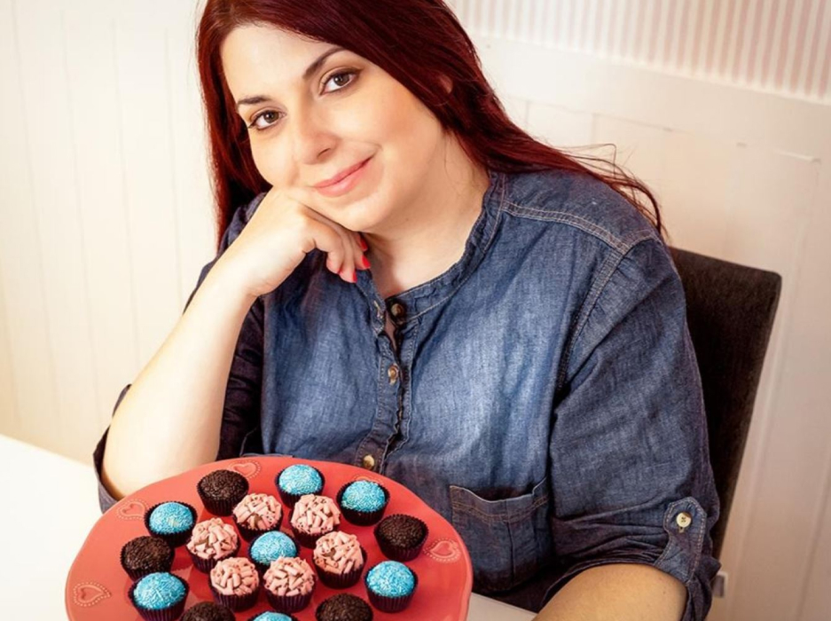
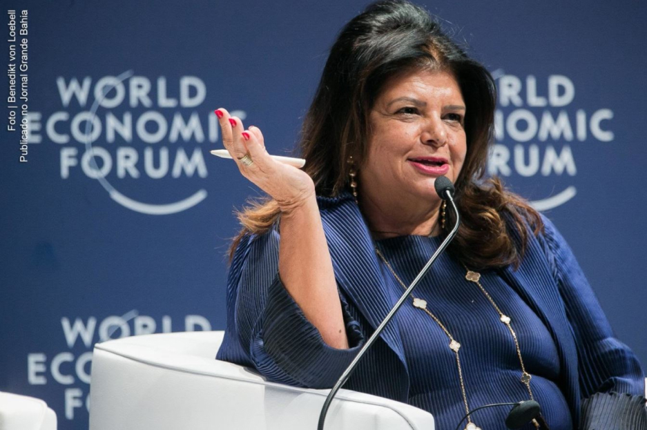

No mês em que se comemora o empreendedorismo feminino, conheça histórias que vão te motivar a empreender na sua carreira ou a ser dona do seu próprio negócio.
A trajetória de cada mulher que resolveu empreender é única, mas não exclusiva, pois você também pode se inspirar nessas histórias para começar a construir o caminho do seu empreendimento, mesmo nesse momento de crise.
No EmpreenDela, que será transmitido ao vivo em nosso canal do YouYube, você irá conferir dicas e mentorias incríveis sobre como é possível realizar seu sonho de tocar seu próprio negócio.
Para começar a entrar no clima desse evento, confira 5 trajetórias de mulheres inspiradoras, que arregaçaram as mangas e, em meio à realidade de suas vidas, conseguiram identificar oportunidades de fazer dinheiro trabalhando para si mesmas.
Por meio dessas histórias de empreendedorismo feminino, você vai entender que empreender vai muito além de abrir um negócio ou mesmo apostar em vender produtos ou serviços.
A criatividade, aliada à força de vontade e visão, são fatores fundamentais para construção de negócios inovadores, capazes de entregar mais valor para os diferentes segmentos do mercado.
A primeira inspiração chama-se Heloísa Helena Assis, mais conhecida como Zica. Em sua trajetória profissional, ela já trabalhou como doméstica e babá. E foi nos fios cacheados que sua iluminação aconteceu e transformou sua vida.
Zica participava de um curso de cabelereira e, em suas aulas e experimentações, testava quais produtos se aplicavam melhor em cabelos crespos.
A intenção dela tinha uma única intenção: desenvolver produtos de qualidade voltados para os cabelos crespos.
Muitas mulheres negras, como Zica, sabem muito bem como o mercado ainda é escasso em oferecer variedades de cremes, shampoos e condicionadores para seu biotipo.
Sua percepção a motivou a se juntar com mais 3 amigas para abrir um salão especializado em cabelos ondulados. E assim, em 1993 nascia o Instituto Beleza Natural.
Apenas nessa primeira parte da história empreendedora, Zica nos ensina algo fundamental para quem deseja aprimorar sua visão de negócios: enxergar no mercado demandas e dores que ainda não foram sanadas, e entregar um produto ou serviço de valor.
Neste caso aqui, a “dor” é a necessidade dos clientes, mulheres negras, com cabelo crespo ou ondulados, que tem dificuldade de encontrar produtos diversos e específicos para cuidar de um dos bens mais preciosos, para estima feminina: os seus cabelos.
Para que esses produtos, entregassem real valor às suas clientes, Zica conta que pensou também no atendimento, criando um espaço que acolhesse essas mulheres, que elas se sentissem como num salão de beleza feito para seu total bem estar e conforto.
Novos produtos foram desenvolvidos, ampliando assim o leque de opções de tratamentos, ampliando as possibilidade e formas de se cuidar bem de cabelos crespos.
Hoje o Instituto Beleza Natural conta com mais de 40 unidades em todo o Brasil. E a Heloísa Helena Assis, hoje é a empreendedora Zica, já reconhecida como uma das 10 empresárias mais poderosas do país pela internacional revista Forbes.
A trajetória da empreendedora Maria José de Lima Freitas começa como termina a trajetória de muitas mulheres. Mazé, como é conhecida, perdeu o emprego de faxineira e se viu desempregada por mais de um ano.
Aos 44 anos, decidiu começar a vender doces como forma de sobreviver e complementar a renda que havia perdido. O ano era 1999 e sua primeira remessa de doces de amendoim rendeu lucro de R$ 20,00.
E nessa parte que entra a coragem, tão essencial para empreendedores não desistirem de seus sonhos, mas ao mesmo tempo encarar com sabedoria a realidade em que se encontram.
Mazé foi desenvolvendo sua estratégia, um caminho de sucesso em empreendedorismo que virou até uma campanha do SEBRAE, que convidou músicos como Nando Reis, Arlindo Cruz e Gabriel o Pensador para cantar sua história.
Dos primeiros pequenos lucros, o negócio da Mazé cresceu, evoluiu e se consolidou como uma marca de valor, que representa um modelo de negócio lucrativo e saudável.
A Mazé Doces chegou a produzir mais de 100 toneladas de doces e mantém mais de 25 funcionários com faturamento anual na casa dos R$ 1 milhão.
Para algumas mulheres, a realidade permite (e pede) uma mudança radical na vida profissional. Nesse sentido, a história de empreendedorismo de Ana Flores é fonte de inspiração para ajudar muitas mulheres a saberem aproveitar o momento certo para transformaram suas carreiras.
Ana, decidiu pedir demissão de uma promissora carreira de 17 anos como executiva para assumir começar seu próprio negócio. Diante de um cenário repleto de desafios para mulheres empreenderem, ela ocupou esse vazio do mercado criando a Rede Mulher Empreendedora, iniciativa focada em empreendedorismo feminino.
Uma mulher empreendedora com um negócio que ajuda outras mulheres a se tornarem empreendedoras, empoderando-as e mostrando que é possível que elas também obtenham seus próprios caminhos de sucesso.
A história de Márcia Tozo é um ótimo exemplo de que o empreendedorismo pode ajudar mulheres a entenderem suas realidades e superarem os desafios que surgem pelo caminho.
Márcia tornou-se mãe aos 16 anos, fato que a forçou largar os estudos e passar a dedicar-se a maternidade.
Quando anos mais tarde retomou a vida de estudante, seguiu em frente até se formar em publicidade, que forneceu conhecimentos que ela utilizou para criar um curso online para quem queria aprender a fazer brigadeiros gourmet.
O modelo de negócio de Márcia tinha como principal público as mulheres, que aprendiam as receitas para poder produzir e vender.
Sucesso total, o curso foi o gatilho para ampliar a oferta de outros cursos digitais em seu blog Tudo de Cake, levando Mácia se tornar uma mulher empreendedora de sucesso e referência no mercado.
A trajetória de Luiza Helena Trajano, presidente do Magazine Luiza, uma das maiores lojas varejistas e de e-commerce do Brasil, começa em 1990, quando ela assume a loja para liderar um exponencial crescimento.
Da década de 90 para os tempos atuais, o Magalu consolidou sua marca, com inovação, tornado a venda online em seu site uma realidade e, em algum nível, referência para outros de seu seguimento.
Marcou presença na pandemia, abrindo espaço em seu e-commerce para o modelo de afiliados, em que empreendedores podem criar lojas dentro do site, comercializado produtos e ganhando dinheiro por comissionamento.
Nas redes sociais, a mascote da loja ajuda a consolidar o relacionamento próximo que a marca tem com seus consumidores.
Além disso, a Magazine Luiza tem se destacado em implementar políticas de diversidade e inclusão na cultura da empresa, protagonizando uma corajosa ação de abrir vagas exclusivas para treinees negros, já que foi identificado uma lacuna de diversidade étnico racial em cargos de liderança do grupo.
Por esses e tantos outros motivos, fechamos essa lista com chave de ouro, contando um pouco da história de Luiza Trajano, um dos maiores destaque de empreendedorismo e liderança feminina no Brasil.